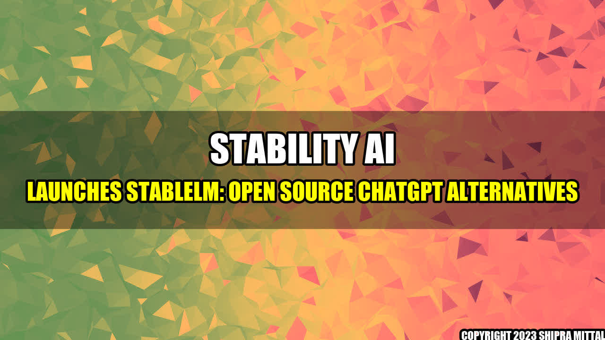

The Rise of StableLM: A Game-Changer in the World of Open Source ChatGPT Alternatives

Imagine having a virtual assistant who understands your every need, responds to your queries, and even makes your daily to-do list. Wouldn't that be incredible? But what if you could build such an assistant yourself, using open-source technology? That's where StableLM comes in.
StableLM is a recent offering from Stability AI, and it's making waves in the world of open-source chat GPT alternatives. GPT-3, or Generative Pre-trained Transformer 3, is a machine learning model that can respond to natural language queries. But StableLM is an open-source alternative that is free to use, easy to install, and compatible with a variety of programming languages.
Example of StableLM's Impact
StableLM has already made waves in the tech world, with several companies and developers singing its praises. Here are some concrete examples of how StableLM has impacted the industry:
- Increased Accessibility: With StableLM being an open-source software, more and more developers and their lesser-known projects are getting a chance to access advanced AI.
- Reduced Costs: Previously, the technology was only available through paid licensing. Now, with StableLM, developers around the globe will have access to the cutting-edge technology at zero cost.
- Democratization of AI: With StableLM being offered to open use and projects, institutions can now develop their own personalized and tailored AI solutions without redirecting any investment into paying for the required technologies.
Conclusion
- StableLM is an open-source alternative to GPT-3, offering machine-learning capabilities at a fraction of the cost.
- StableLM has already impacted the industry by increasing accessibility, reducing costs, and democratizing the use of AI.
- With StableLM, the possibilities for AI development are virtually endless, and we can expect to see a lot more from this technology in the future.
References and Further Readings
Social
Share on Twitter Share on LinkedIn